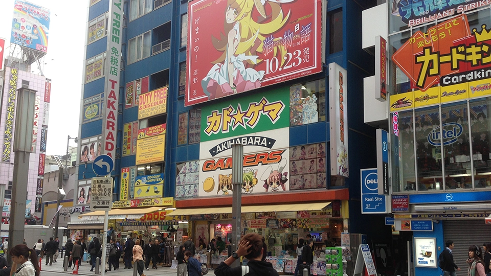

Tokyo, Japan
Tokyo serves as the focal point of a vast metropolitan complex that also encompasses Kawasaki and Yokohama and serves as the country's administrative, cultural, financial, economic, and educational hub. There are several temples and shrines in addition to the Imperial Palace, which is surrounded by stone-walled moats and expansive gardens. In addition to being a bustling metropolis, Tokyo is also a city that offers a unique blend of traditional and modern culture. Visitors can experience the traditional side of Japan by visiting ancient temples and shrines, such as the famous Senso-ji Temple in Asakusa, or the Meiji Shrine in Shibuya. These sites are not only important religious landmarks but also offer visitors a glimpse into Japan's rich history and culture. On the other hand, Tokyo is also known for its modern and cutting-edge technology, as seen in the futuristic architecture of buildings like the Tokyo Skytree and the Shibuya Crossing, one of the busiest pedestrian intersections in the world. The city is also a hub for popular culture, with districts like Akihabara and Harajuku offering unique experiences for anime and fashion enthusiasts.
Tokyo, I think is on everybody's bucket list. My girlfriend and I really want to go to Japan in general and as a video game lover myself. I am a big fan of Nintendo. I want to go to Nintendo World. It is an amusement park that is full of anything nintendo such as the Mario Franchise. My girlfriend is a fan of anime as well and the culture and food of Japan. We would like to visit real life places that we've seen in Animes. I also would love to go shopping in Tokyo Japan since people there usually just sell their consoles and you can find them on thrift stores for a much cheaper price. Tokyo truly has something for everyone, the city is a gamer's paradise with places like Nintendo World, where fans can immerse themselves in the world of their favorite characters. At the same time, Tokyo also offers a unique cultural experience, with its bustling streets, historical landmarks like the Imperial Palace, and traditional shrines and temples. The city is also a foodie's dream, with an abundance of delicious and diverse options to try, from sushi and ramen to street food and sweets. It's no wonder that Tokyo is often depicted in anime, which has also contributed to its popularity among fans of Japanese pop culture. With so much to explore and discover, Tokyo is truly a must-visit destination.
Go back